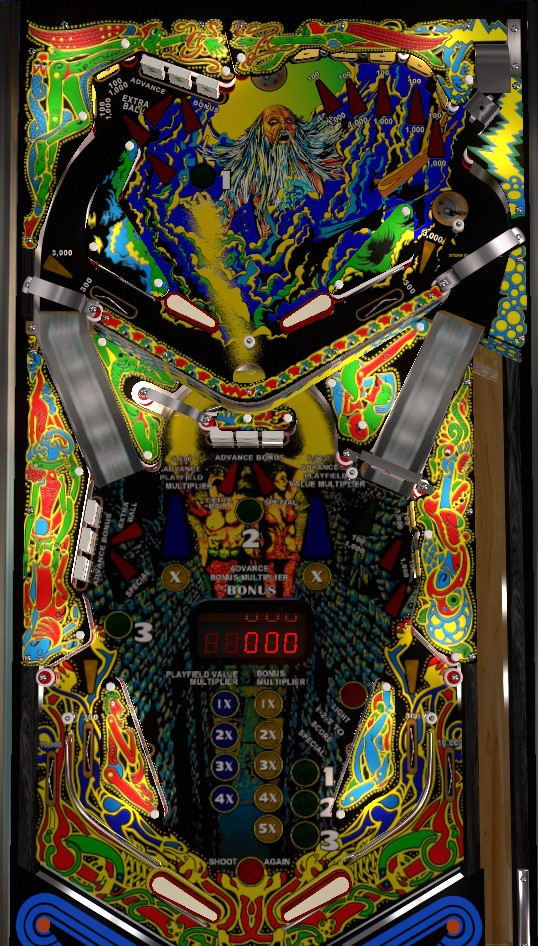

Drop targets build base bonus. Complete drop targets or make all 4 rollover lanes to light the center u-turn for a bonus multiplier. Base bonus and multiplier carry over from ball to ball. Hit all 9 standup targets (2 upper left, 5 upper right, 2 lower right) to release any locked ball(s) and light the u-turn for playfield multipliers that last until the end of the ball. Drop target banks are numbered 1-2-3; complete a lit green bank to move the green light to the next bank and spot a standup target. Complete 1-2-3 in order once for Red Special and twice for Green Special; special can be 100,000 points, extra ball, free game, or nothing.
There are 3 banks of drop targets: one in the upper left of the upper playfield labelled 1, one in the center of the lower playfield labelled 2, and one in the left of the lower playfield labelled 3. Each target down in any bank scores 100 points and a bonus advance. Completing any bank causes it to reset instantly and spot one of the game's 4 rollover lanes for progress toward a bonus multiplier.
At the start of each ball, drop target bank #1 is lit green. Complete the lit green bank to cause the next bank in the 1-2-3 sequence to be lit green. Completing a lit green bank also spots one of the 9 standup targets in the game. Completing the 1-2-3 drop target banks in order all in a single ball qualifies the extra ball, which can be set to give 100,000 points instead; the extra ball is collected at the center drop target of one of the three banks, rotating each time a slingshot is triggered. Completing the 1-2-3 drop target banks in order twice in a single ball scored the Green Special, which can be set to 100,000 points, an extra ball, a free game, or nothing; the Green Special is awarded immediately.
There are 4 rollover lanes on Lightning that can be lit yellow: the two standard in lanes at the lower playfield, and two lanes in the upper playfield that go under the upper playfield flippers, directing the ball back to the lower playfield. Rolling through one of these lanes when it is not lit scores 300 points and lights it. Rolling though one of these lanes when lit scores 3,000 points. Completing any drop target bank lights one of these lanes for you. When all 4 lanes are lit, they will all unlight, and the u-turn lane on the lower playfield will be lit for a bonus multiplier. If the u-turn was already lit for bonus multiplier, the 4 rollover lanes will stay lit until the bonus multiplier is collected, then once it is, the lanes will reset and automatically turn the bonus multiplier light on again, meaning you can effectively queue up to 2 bonus multiplier advances at the center lane at once. Bonus multiplier generally carries over from ball to ball, but if you max the multiplier out at 5x, it will be reset back to 2x for your next turn. Also, advancing the bonus multiplier to 5x also lights the center drop target of one of the three banks for a Red Special; this moves between banks when slingshots are triggered like the extra ball, and it can be set to 100,000 points, and extra ball, a free game, or nothing.
There are 9 standup targets around the game: 2 in the upper left of the upper playfield, 5 in the upper right of the upper playfield, and 2 on the right of the lower playfield. All targets start unlit. Hit an unlit target to light it and score 100 points. Hitting a lit target scores 1,000 points. Completing the 1-2-3 bank of drop targets currently lit green will automatically light one standup target for you, but it won't score the corresponding points.
Both saucers on the upper playfield are always available for locking a ball, which scores 7,000 points. Lighting all 9 standup targets will release all locked balls for multiball, and also lights the center u-turn lane blue for a playfield multiplier. The center u-turn lane stays lit blue until the end of the current ball in play or until the playfield multiplier has been maxed out at 4x. Earned playfield multipliers last until the end of the ball in play, and do not disappear when multiball ends. It is possible to relock balls during multiball. There are no scoring features associated with multiball other than the ability to increase the playfield multipliers. Locked balls are held from player to player and game to game, so lock stealing is available and there may already be balls locked when you walk up to the table and start a new game.
Lightning has a conventional in/out lane setup. Out lanes score 10,000 points. In lanes score 300 points when not lit, 3,000 when lit, and light up whenever they are made. Making both in lanes and both upper playfield rollover lanes qualifies the u-turn lane for a bonus multiplier advance.
Bonus is advanced by any drop target. The current base bonus value is shown by a five-digit display set into the playfield surface. Base bonus maxes out at 99,000 points. Lighting all 4 in lanes and upper playfield rollover lanes lights the center u-turn lane for one bonus multiplier advance. Max bonus is 5x 99,000 = 495,000 points. Advancing to 5x bonus qualifies the Red Special, which can be worth an extra ball, a free game, 100,000 points, or nothing. Base bonus and bonus multiplier generally carry over from ball to ball; however, if the bonus multiplier is maxed out at 5x and you drain, your bonus multiplier will be reset to 2x for your next ball.